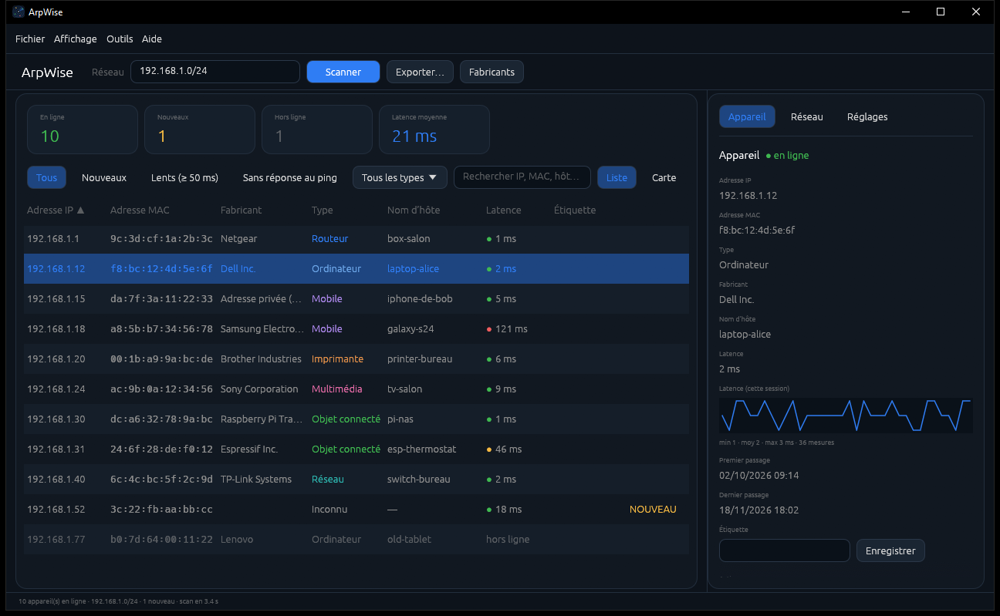

ArpWise : ARP, le protocole du réseau local, et « wise », malin.
Tout ce qui est branché sur ton réseau, en un clic.
Les appareils de ta maison ou de ton bureau, leur fabricant, leur vitesse de réponse, et une alerte quand un nouveau arrive. Gratuit, sans compte, sans pub, et sans rien d’autre à installer.
Pour Windows et Linux. Windows 32 bits, ARM64, .deb et .rpm : tous les téléchargements.
- Sans pilote
- Sans compte
- Sans publicité
- Open source

Tout ce qu’il faut pour voir ton réseau
Écrit en Rust : un seul petit programme, rapide, qui fait tout sur ton ordinateur.
Tous tes appareils
Adresse IP, adresse MAC, nom et fabricant. ArpWise devine même le genre : box, ordinateur, téléphone, imprimante, télé…
Leur vitesse de réponse
La latence de chaque appareil est mesurée en même temps, avec un petit graphique pour suivre son évolution.
Les nouveaux venus
ArpWise se souvient de ce qu’il a déjà vu. Un appareil inconnu est signalé, et ceux qui sont partis restent dans la liste, grisés.
Une carte du réseau
Ta box au milieu, les appareils autour, placés selon leur vitesse de réponse. On voit d’un coup d’œil qui va bien et qui traîne.
Des actions en un clic
Ping, traceroute, scan de ports, ouvrir l’appareil dans le navigateur, copier l’adresse, ou le réveiller à distance (Wake-on-LAN).
Export et ligne de commande
Enregistre la liste en CSV ou JSON, ou pilote tout depuis ton terminal avec la commande arpwise.
À quoi ça ressemble
Tout en noir et blanc, en thème sombre ou clair. Les appareils montrés ici sont inventés.


Ce qu’ArpWise garde de toi : rien
Pas de compte, pas de publicité, pas d’outil de statistiques. ArpWise n’a même pas de serveur qui reçoive tes données : tout se passe sur ton ordinateur.
Télécharger
Clique sur le fichier qui correspond à ton système : le téléchargement démarre tout de suite. Version 0.5.1.
| Système | 64 bits | 32 bits | ARM64 |
|---|---|---|---|
| Windows | .msi .zip | .msi .zip | .msi .zip |
| Linux Debian, Ubuntu… | .deb | .deb | .deb |
| Linux Fedora, openSUSE… | .rpm | .rpm | .rpm |
L’installateur Windows ajoute un raccourci au menu Démarrer et la commande arpwise à ton PATH. Windows peut afficher « éditeur inconnu », car les installateurs ne sont pas encore signés : clique sur Informations complémentaires, puis Exécuter quand même.
En ligne de commande
Tout ce que fait l’appli peut aussi se faire depuis un terminal.
# scanner le réseau détecté automatiquement arpwise # scanner un réseau précis, mesurer la latence, exporter arpwise --network 192.168.1.0/24 --ping --output appareils.csv # télécharger la liste des fabricants (une seule fois) arpwise --update-vendors # scanner des ports d'une machine à toi, réveiller un ordinateur arpwise ports 192.168.1.10 --range 22,80,8000-8100 arpwise wake aa:bb:cc:dd:ee:ff
Questions fréquentes
Les réponses courtes.
ArpWise est-il gratuit ?
Oui, entièrement : pas de publicité, pas de compte, pas d’abonnement. Le code est ouvert, sous licence GPL-3.0.
Qu’est-ce qu’il voit, au juste ?
Les appareils du même réseau local que ton ordinateur : ta box, les ordinateurs, les téléphones, les imprimantes, les objets connectés… Les appareils d’un autre réseau, derrière un routeur, ne sont pas visibles : c’est une limite du protocole ARP.
Faut-il installer un pilote ou être administrateur ?
Non. ArpWise utilise ce que ton système a déjà : l’API SendARP sous Windows, la table ARP du système sous Linux. Pas de Npcap, pas de Wireshark.
Pourquoi Windows parle d’« éditeur inconnu » ?
Les installateurs ne sont pas encore signés, ce qui demande un certificat payant. Clique sur « Informations complémentaires », puis « Exécuter quand même ». Les sommes de contrôle sont publiées avec chaque version pour vérifier les fichiers.
Ça marche sur Mac ?
Pas pour l’instant : ArpWise fonctionne sous Windows (64 bits, 32 bits et ARM64) et sous Linux (x64, 32 bits et ARM64).
Puis-je l’utiliser sur n’importe quel réseau ?
Seulement sur un réseau qui t’appartient, ou que tu as le droit d’inspecter. ArpWise refuse d’ailleurs de scanner autre chose que des réseaux privés.
Où sont enregistrées mes données ?
Dans le dossier ArpWise de ton profil : %APPDATA%\ArpWise sous Windows, ~/.config/ArpWise sous Linux. Tu peux l’ouvrir depuis le menu Outils.
Une question, un problème ?
Écris à support@axim.ch.
ArpWise est fait par Qoats – software with a spine. Gratuit et open source, sous licence GPL-3.0.